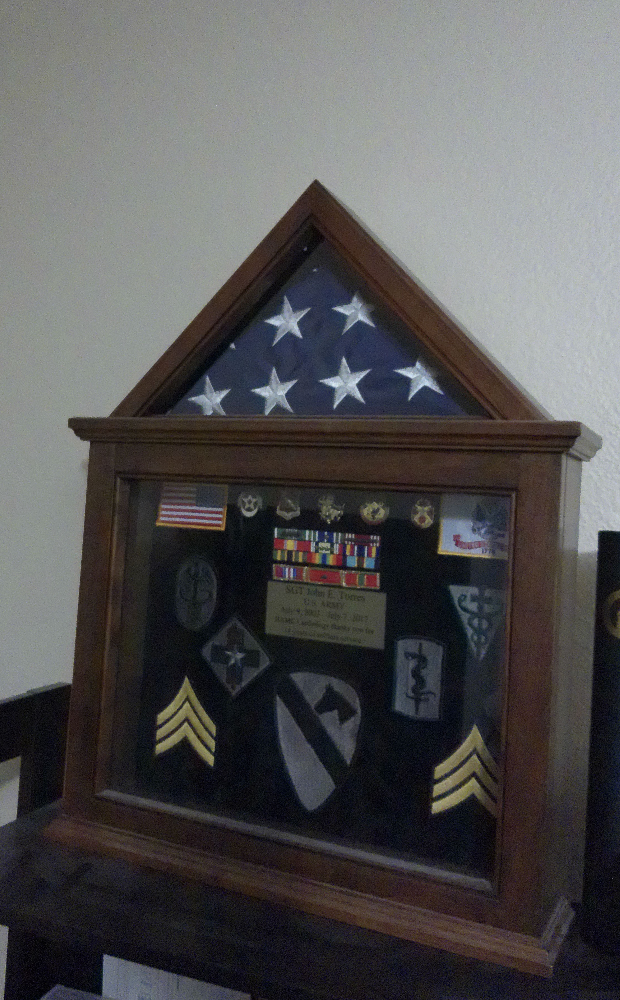
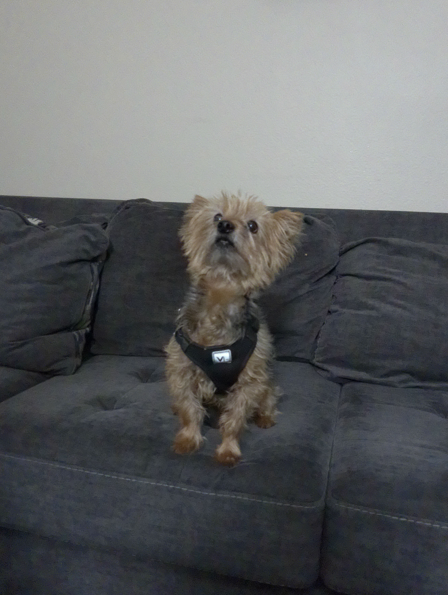

My pictures so far...
Since this whole culmation of work will lead us to our final project,
I might as well get started. Here are a few of pictues. Nothing
TOO crazy.
My Awards

This is a picture of the awards I received while in the service.
On my last day in the service, I was presented this shadow box of all my
awards, and unit patches while I was in the US Army.
My Coins

This is a picture of my Army coins.
You usally get these from leaders for various reasons such as
accomplishing an event or for on the spot rewarding.
The old custom is when friends are at a table, you pull out
your highest coin (since they usually has a rank on it), and whom
ever has the lowest ranking coins pays for the round.
My Pup

This is a picture of my dog Finn. He is a Yorkie.
He is an old guy. Almost 12 years young.
More Pup pics!
Come back later for more!
JeT